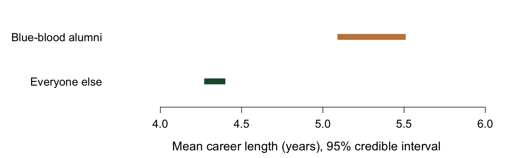
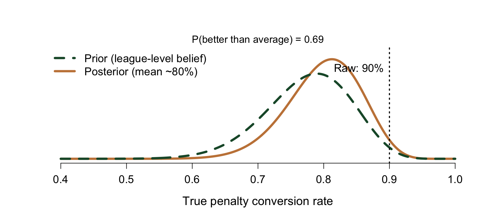
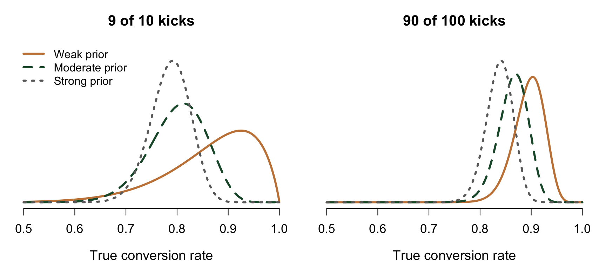
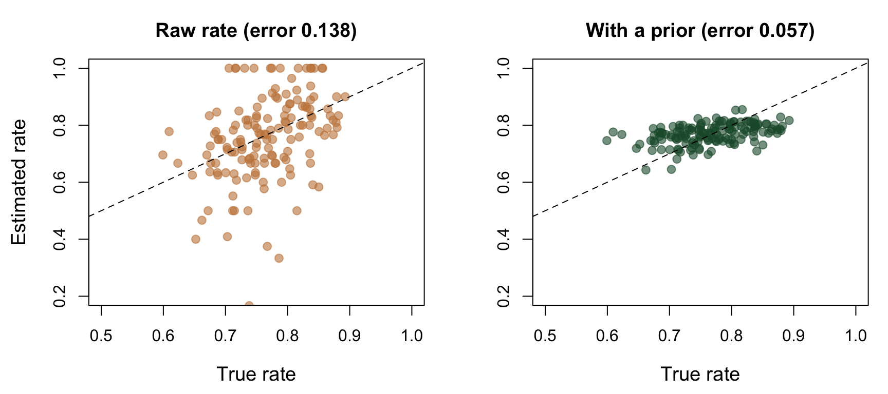
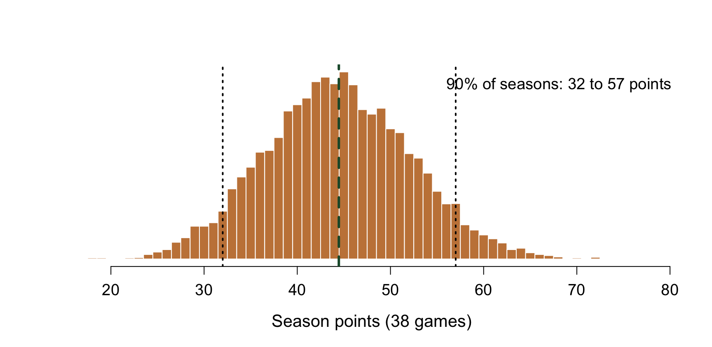

Why Loving Analytics Isn’t the Same as Doing It
Your phone takes photos that once needed professional gear.
So why do people still pay photographers?
The camera was never the skill. Knowing what’s worth shooting, and whether the image is real, is.
Analytics is the same. Everyone has the camera now: dashboards, models, AI.
Framing: does it change a decision?
Noise: is it signal or luck?
The client: is someone empowered to act on it?
Liverpool needed a new manager.
Ian Graham, their director of research, looked at Borussia Dortmund.
The league table said Dortmund had a disappointing stretch. The data said they were still the second-best team in Germany, and among the unluckiest over ten seasons.
Same league table. Different frame. And the result was a hiring decision, not a report.
It’s a shootout Saturday. Is he your designated taker?
Raw math says 90%. Your gut says “…it’s ten kicks.”
Ten kicks is a grainy photo. You can’t tell a face from a smudge.
What helps is what you already know about what you’re looking at: penalties go in about three in four times. That’s a prior.
\[ \theta \sim \text{Beta}(31,\,9) \quad\Longrightarrow\quad \theta \mid \text{9 makes, 1 miss} \sim \text{Beta}(40,\,10) \]

The update is addition: 31 + 9 makes, 9 + 1 miss. And the answer is a distribution, so you can ask: how likely is he actually better than average?

With ten kicks, your assumption matters. With a hundred, the data takes over. More exposures sharpen the picture.
Every model has a prior. A model that doesn’t show you one is still using it.
With Jonas Schiel. “Blue blood” programs: Duke, North Carolina, UCLA, Indiana, Kentucky, Kansas.
Career length is a count, right-skewed. Model: Poisson likelihood, Gamma prior. Prior expectation: about 5 years for blue-blood alumni, about 3.5 for everyone else.
Same logic as the penalties. Different conjugate pair, much more data.

| Career longer than | Blue-blood | Everyone else |
|---|---|---|
| 5 years | 42.8% | 27.1% |
| 10 years | 1.8% | 0.76% |
There’s a real gap: the 95% credible interval for the difference is 0.74 to 1.19 years.
What I can’t say: that the school causes it. Top prospects pick top programs. And the model treats each season as independent, which careers aren’t.
Knowing what your model can’t say is part of the model.
Liverpool’s research team under Graham: six people. Physics, astrophysics, a former junior chess champion, two data engineers.
Not a department that makes slides. One asked to shape recruitment, tactics, and the academy.
Liverpool’s owners set out to build a data-driven club. By the publisher’s account it took about a decade, and the obstacles weren’t mathematical: transfer mistakes, playing style, egos.
The other half is the room
the model lands in.
X years ago, a family member of mine was diagnosed with cancer.
Standard of care then would have meant more extensive surgery/treatment – describe at the level you’re comfortable with.
By the time we needed it, more advanced statistical models let oncologists predict who could safely need less.
Same skill as the penalty taker’s record.
Pointed at something that mattered.
Framing. Noise. The client.
Anyone can take the photo.
The work is knowing what to shoot,
and whether the image is real.
Questions?
Cooper Maughan
A team with less money finds value the market missed.
Oakland, [year], [fact you’ve verified]
Data in service of the roster.
A line updated with every injury report and every wager.
Danny Funt’s Everybody Loses is where this idea comes from.
Data in service of the margin.
| Typical line | Win on a $100 bet | Break-even win rate |
|---|---|---|
| -110 | $90.91 | 52.4% |
\[ EV = 0.50 \times (+90.91) + 0.50 \times (-100) = -\$4.55 \]
per $100 bet, on average, forever – even on a true coin flip.
VERIFY exact wording: “When cheating becomes the norm, following the rules amounts to a handicap.”
Cathy O’Neil, Weapons of Math Destruction
VERIFY exact wording and source: “I don’t think players should be turned into roulette chips.”
Bill Bradley
PASTE Funt quote, under ~15 words, with page number
Danny Funt, Everybody Loses, p. __
The sportsbook is arguably the best analytics shop in this picture.
Same math.
Different objective function.
What the model is built to maximize is a choice. Someone makes it.
Anyone can take the photo. The tool is neutral.
The objective is the choice,
and the choice belongs to the people in this room.
With Claire Peterson and Anzlei Larsen. Multiple linear regression, 1,000-iteration cross-validation, NHL seasons 2000-01 to 2024-25.
Adjusted R² = 0.123. Cross-validated RMSE 0.157, effectively unbiased.
We reported 12% as the finding, not the failure. Hockey is noisy, and the variables that probably matter (team quality, age, coaching system) weren’t in the data.

Players with 3 kicks and players with 30 shouldn’t be trusted equally. Shrink each estimate in proportion to how little you know.

Identical team. Identical strength. The only thing that changed was luck.